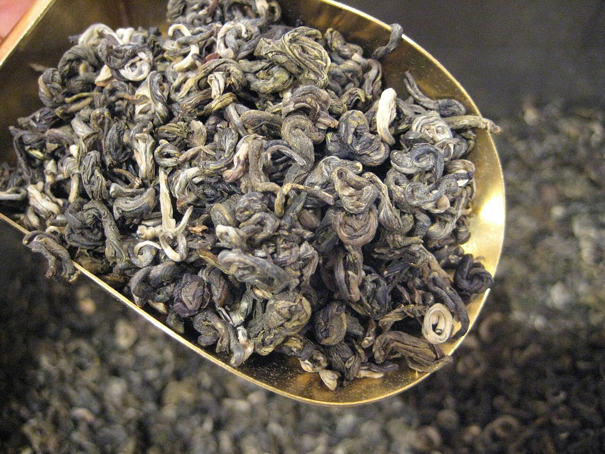
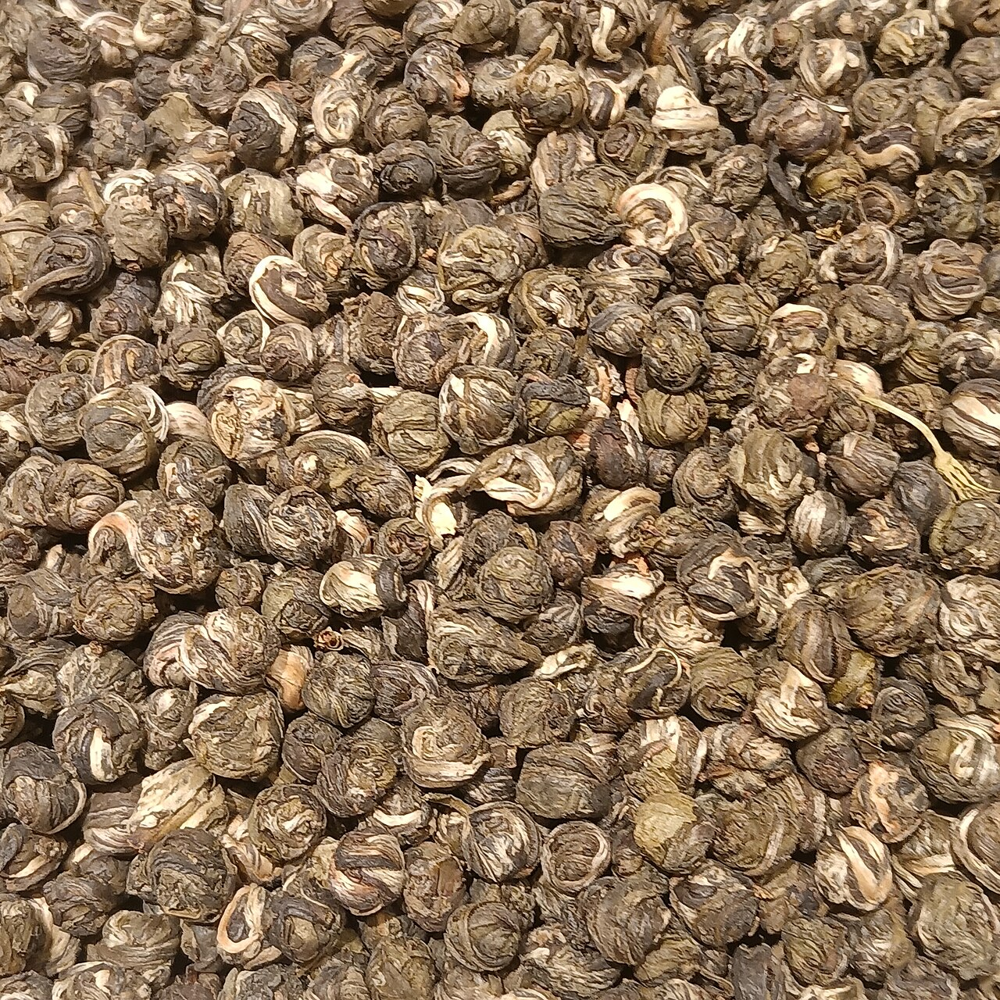
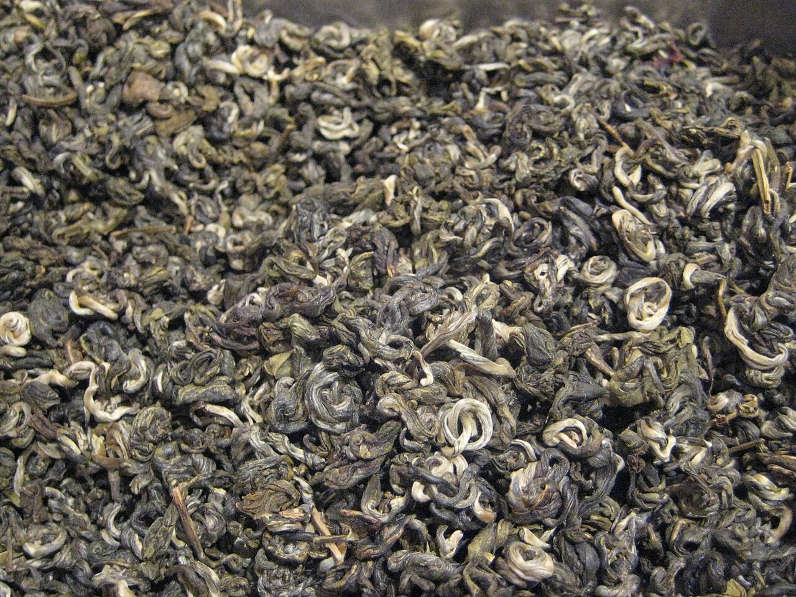

花茶专题
茉莉花茶：从福州窨制到横州鲜花，理解一杯中国花茶为什么既讲工艺也讲产地
创建时间： · 修改时间：
如果只看今天中文互联网最容易被忽略、却又最值得重写的一类茶，茉莉花茶肯定在前列。它太常见，以至于常被误会成“有点花香的绿茶”；它太日常，又常被低估成只适合北方茶馆、办公室大杯和夏天解腻。可一旦真正走进它的制作逻辑，就会发现茉莉花茶不是往茶里“加香”那么简单，而是一整套围绕鲜花吐香、茶坯吸香、复火定香展开的再加工工艺体系。它同时连接着福州的传统窨制技艺、横州的大规模茉莉鲜花供应、晚间开花的时间管理、不同茶坯的吸香能力，以及消费者对“香、鲜、浓、净”的复合判断。
这也是它现在格外值得写的原因。近几年中文茶圈、产区报道和消费讨论里，茉莉花茶重新变得重要：一方面，横州作为中国最大的茉莉花生产基地持续被讨论，鲜花供应和原料规模决定了全国许多茉莉花茶的底层结构；另一方面，福州茉莉花茶窨制工艺被反复拿来解释什么叫真正的“窨次”、什么叫工艺香而不是廉价香精感。再加上现制茶饮对“茉莉绿茶底”“茉莉雪芽”“茉莉毛尖”之类词汇的放大，越来越多年轻消费者开始重新问：我喝到的这杯茉莉，到底是花香压倒茶，还是茶把花香托住？
 茉莉花茶首先是一种茶叶工艺成品，而不是简单“往绿茶里放几朵花”。它的核心在于鲜花与茶坯之间的吸附和转化过程。
茉莉花茶首先是一种茶叶工艺成品，而不是简单“往绿茶里放几朵花”。它的核心在于鲜花与茶坯之间的吸附和转化过程。茉莉花茶到底是什么茶？它属于绿茶吗？
严格来说，茉莉花茶不直接等于绿茶。它属于花茶，也属于再加工茶。很多成品的底层原料是绿茶茶坯，所以入口会带有绿茶的鲜感、清感和一定的收敛度；但它最终的风味并不是只由茶坯决定，而是由窨制过程把花香结构“做”进茶叶里。因此，喝茉莉花茶时不能只问“这绿不绿”，更要问“它的花香是怎么来的”“茶坯本身够不够干净”“窨次够不够”“复火稳不稳”。
这也是它和单纯调香饮料的根本差别。好茉莉花茶的香气不是漂在表面的第一鼻香，而是热杯时显、入口时顺、咽下后仍能回到鼻腔的连贯香气。花香和茶味如果是断开的，往往说明原料或者工艺有明显短板。

不同茶坯会做出不同外形的茉莉花茶：有条索型、珠形、针形，也有更强调芽头和白毫的高等级做法。它是怎么做出来的？关键不在“放花”，而在“窨花”
茉莉花茶最关键的词不是拌花，而是窨花。所谓窨制，核心是利用茉莉鲜花在夜间开放、集中吐香的生理特性，让已经处理过、含水率控制到位的茶坯去吸收花香，再通过起花、复火、再窨等环节，把香气固定进成品结构。工艺里既有鲜花管理，也有茶叶管理：花要在合适开放度使用，茶坯要足够干净、含水率要准，堆温不能失控，起花不能拖，复火不能把香气烤死。
中文茶圈经常说“一窨一提”“多窨多提”，就是在说茉莉花茶的层次并非一次完成。高品质产品往往要经历多轮鲜花吐香—茶坯吸香—起花—复火，最后再做提花，让香气更鲜灵、更纯净。也正因为流程复杂，真正好的茉莉花茶从来不是廉价快工艺能稳定复制出来的东西。
为什么总会同时提到福州和横州？
这是今天理解茉莉花茶最重要的现实结构之一。福州常被视为茉莉花茶的重要发源地和传统工艺代表，尤其是福州茉莉花茶窨制工艺、城市与花茶文化的长期绑定，使它在历史叙述和技艺表达上一直拥有中心位置。联合国粮农组织曾将“福州茉莉花与茶文化系统”列入全球重要农业文化遗产，这说明福州的价值不仅在成品名气，还在“山上种茶、平原种花、城市做茶与喝茶文化”的整体系统性。
但如果看今天的原料供应和市场规模，广西横州又绕不过去。横州已是中国最重要的茉莉鲜花生产基地之一，中文报道和公开资料里经常提到其全国领先的鲜花与茉莉花茶产量。很多市场上的茉莉花茶，工艺语言属于传统花茶体系，但鲜花供应、产业链配套和成本结构，很大程度上又与横州相关。于是消费者常会遇到一个误区：把“花从哪来”和“茶在哪做、怎么做”混为一谈。实际上，鲜花产地、茶坯产地、窨制地点、品牌归属，完全可能不是同一个地方。
这类分工为什么重要？
因为它直接影响你怎样判断一款茶。假如一款茶强调福州工艺，那你更应关注它的窨次、香气纯净度、茶汤是否细腻、是否有传统花茶的“鲜灵而不浮”；如果一款茶强调横州鲜花资源，那它更多是在说明鲜花供应链和花材基础。两者都重要，但不是一回事。把这两个层次分开，才能理解为什么同样叫茉莉花茶，价格、香气、耐泡度和气质会差这么远。
这也解释了为什么茉莉花茶特别适合做知识型长稿：它不是一个单产区单答案的茶，而是一张由鲜花、茶坯、工艺、物流和消费认知共同组成的网。

珠形或龙珠形茉莉花茶说明，花茶不仅有香气层次，也有外形设计与冲泡观看体验。不同形态背后往往对应不同茶坯与目标消费场景。茶坯为什么这么重要？不是花越香越好吗？
不是。茉莉花茶最容易被误判的一点，就是人们会以为花香越冲越好。实际上，花香只是结果，茶坯才是承接这个结果的结构。常见茶坯多为烘青绿茶，也有用芽头更细嫩、白毫更多的原料来做高等级产品。茶坯要有吸香能力，也要有足够干净的底味；如果本身粗老、闷、杂，哪怕花香一开始很高，也很容易做成“表面香、入口散、喝到后面空”的茶。
所以真正懂茉莉花茶的人，会特别看重茶汤里那股“香里有骨架”的感觉。你闻到的是花，但喝到的是花与茶共同完成的口感：入口鲜，随后有一点清甜、豆感或嫩栗感，再往后才是花香停在口腔和鼻腔的回返。如果只有尖锐香气而没有茶汤支撑，往往只能算热闹，不算高级。
一杯好的茉莉花茶应该是什么风味？
好茉莉花茶的第一标准是净。不是香得像香水，而是闻起来清透、没有浊气，没有闷熟感，也没有人工甜香的黏腻。第二标准是鲜灵。热杯时香气会立刻起来，但不炸、不刺鼻；入口后香气和茶味是连着的，咽下去还能回鼻。第三标准是汤感。优质产品通常汤色黄亮或浅金黄，滋味鲜爽中带柔和，不会死苦、死涩，也不会只有一股空空的花甜。
如果要再往细里分，不同风格的茉莉花茶差异很大：有的偏清雅，强调嫩芽、鲜爽和细白毫；有的偏浓郁，重视老茶客一入口就能感知的花香冲击；有的做龙珠、银针、雪芽等形式，更强调观感和礼品属性；也有不少偏日常的大宗口粮茶，核心价值在于稳定、解腻、耐泡、适合大杯长时间喝。

高等级茉莉花茶常会兼顾芽头嫩度、条索整齐度和观赏性，说明花茶并不只是“香气型消费品”，也有明确的等级和制作审美。怎么冲泡，才能把它的长处泡出来？
茉莉花茶适合玻璃杯、盖碗两种典型泡法。玻璃杯适合看芽叶舒展和日常连续饮用，盖碗则更适合分辨香气层次、控制浓度。水温一般不必过低，也不建议沸水猛冲。80°C 到 90°C 是多数产品比较稳妥的范围：太低，香气打不开；太高，容易把鲜灵感和细腻度冲散，让涩感提前出来。
如果用盖碗，3 克左右配 100—120 毫升水是常见起点。第一泡可以 15—25 秒，后面视茶坯嫩度和窨制强度略作延长。高等级芽头茶不必刻意闷泡，求的是香气清透和汤感顺滑；日常口粮型茉莉花茶则更适合杯泡，续水喝，观察它在长时间浸泡里是否还能保持净、甜、顺。一般来说，真正做得好的产品，前两三泡最见工艺，杯泡到后面仍不浑不闷，说明底子扎实。
喝茉莉花茶时，最常见的几个误区
第一，认为看得见花瓣就是好。其实很多优质茉莉花茶在起花后并不会留下太多花朵，甚至刻意追求净度。花在成品里看起来多，不一定说明工艺高级，反而可能只是视觉营销。第二，认为越香越高级。真正高级的是香气纯、透、活，而不是一冲就满屋子都是单调甜香。第三，认为茉莉花茶只是“女孩子喝的香茶”或者“老人喝的大路货”。这两个刻板印象都太浅，它既有高端细作，也有强日常性的口粮体系，还能与城市茶馆、北方饮茶习惯、宴席解腻和现代冷泡场景连在一起。
第四，也是最近几年最值得提醒的：不要把现制茶饮里的“茉莉”直接等同于传统茉莉花茶。很多现制饮品用的是茉莉绿茶底，但它在糖、奶、果香或冰感系统里扮演的是基底角色，和一杯独立品饮的窨制花茶不是同一套评价标准。现制饮品帮更多年轻人记住了“茉莉”这个词，却也容易把人带向“只要香就行”的简化判断。
为什么它现在又有长期价值？
因为茉莉花茶同时占了三种价值。第一种是知识体系价值：它能把“再加工茶”“花茶”“窨制工艺”“茶坯概念”这些常被忽略的知识重新拉回茶类地图。第二种是现实消费价值：它仍然是中国最广泛、最稳定、最有日常基础的花茶之一，市场上从几十元口粮到高等级礼品都有清晰分层。第三种是文化价值：它把福州、横州、北方茶馆、城市礼俗和现代年轻人的“茉莉认知”连成了一条线。
如果说龙井让人理解中国绿茶为什么讲春天、嫩度和炒制，那么茉莉花茶会进一步告诉读者：中国茶不只有原叶分类，还有一整套再加工与香气工艺的世界。它和乌龙茶、普洱茶、红茶不在同一条工艺逻辑上，却同样能说明中国茶为什么复杂、为什么不能只靠“一个类别一个味道”去理解。
如果想继续深挖，下一步该从哪几个方向看？
最值得继续看的方向有四个：其一，福州传统窨制工艺与现代工业化生产的差别；其二，横州鲜花产业如何影响全国花茶成本、季节和供应节奏；其三，不同茶坯——比如烘青、毛峰型、银针型、龙珠型——如何改变香气结构与冲泡体验；其四，现制茶饮对“茉莉”口味教育带来的机会与误读。把这四个方向放在一起，你会发现茉莉花茶不是一个老派遗留品，而是一个仍在持续生长、持续被重新解释的中国茶门类。
来源参考：维基百科：茉莉花茶、维基百科：福州。